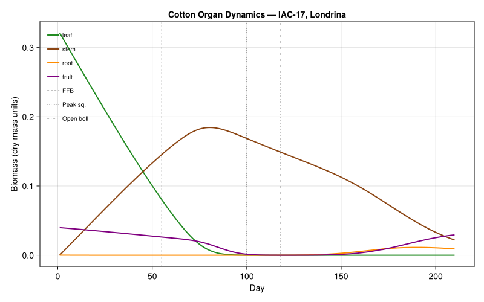
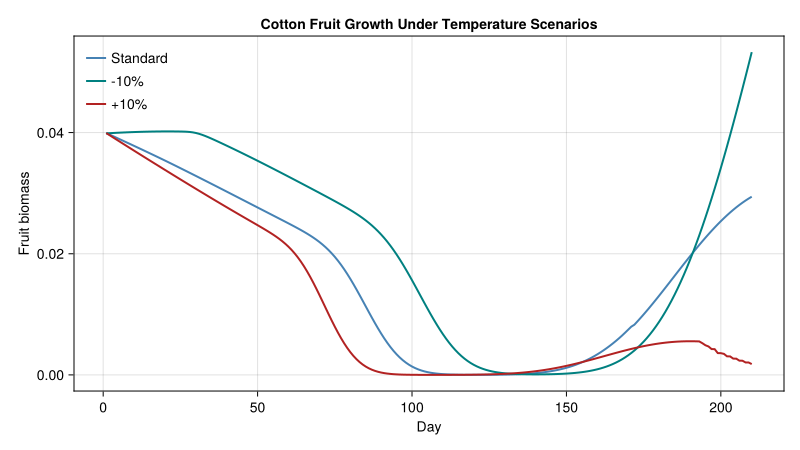

Cotton Plant Model
Simon Frost
- Background
- Model Parameters
- Plant Organ Populations
- Photosynthesis and Resource Allocation
- Weather Data: Londrina, Brazil (1982–83)
- Running the Simulation
- Tracking Phenological Events
- Stage-Specific Population Dynamics
- Supply/Demand Analysis
- Sensitivity Analysis: Temperature Effects
- Key Insights
Primary reference: (Gutierrez et al. 1984).
Background
This vignette reproduces the cotton (Gossypium hirsutum L., cv. IAC-17) PBDM from the foundational paper by Gutierrez, Pizzamiglio, dos Santos, Villacorta, and others (1984). This is the canonical example of a distributed delay plant population model — the paper that introduced the general framework.
The cotton plant model tracks four organ populations (leaves, stems, roots, fruit) through physiological time, with growth driven by photosynthetic supply and demand-based allocation. Fruit shedding occurs when the supply/demand ratio drops below critical thresholds.
Reference: Gutierrez et al. (1984). A general distributed delay time varying life table plant population model: Cotton growth and development as an example. Ecological Modelling 44:247–260.
Model Parameters
using PhysiologicallyBasedDemographicModels
using CairoMakie
const T_THRESHOLD = 12.0 # °C
# Development rate (linear degree-day model)
dev_rate = LinearDevelopmentRate(T_THRESHOLD, 40.0)
# Key phenological benchmarks (in degree-days above 12°C)
const DD_FFB = 415.0 # First fruiting branch
const DD_PEAK = 940.0 # Peak squaring
const DD_BOLL = 1200.0 # First open boll
const DD_LEAF_SENESCE = 700.0 # Leaf senescence age700.0Plant Organ Populations
Each organ type is modeled as a distributed delay population. The k parameter controls the shape of the age distribution — higher k gives a tighter (more deterministic) distribution of developmental times.
# Cotton plant organ populations with k=30 substages
k = 30
# Leaves: τ = 700 DD (senescence age)
leaf_delay = DistributedDelay(k, DD_LEAF_SENESCE; W0=0.5) # Initial seed mass
leaf_stage = LifeStage(:leaf, leaf_delay, dev_rate, 0.001)
# Stems: long-lived structural tissue (τ = 2000 DD)
stem_delay = DistributedDelay(k, 2000.0; W0=0.3)
stem_stage = LifeStage(:stem, stem_delay, dev_rate, 0.0005)
# Roots: τ = 150 DD (rapid turnover)
root_delay = DistributedDelay(k, 150.0; W0=0.2)
root_stage = LifeStage(:root, root_delay, dev_rate, 0.002)
# Fruit (squares → bolls): τ = 800 DD to open boll
fruit_delay = DistributedDelay(k, 800.0; W0=0.0)
fruit_stage = LifeStage(:fruit, fruit_delay, dev_rate, 0.001)
cotton = Population(:cotton_IAC17, [leaf_stage, stem_stage, root_stage, fruit_stage])Population{Float64}(:cotton_IAC17, LifeStage{Float64, LinearDevelopmentRate{Float64}}[LifeStage{Float64, LinearDevelopmentRate{Float64}}(:leaf, DistributedDelay{Float64}(30, 700.0, [0.5, 0.5, 0.5, 0.5, 0.5, 0.5, 0.5, 0.5, 0.5, 0.5 … 0.5, 0.5, 0.5, 0.5, 0.5, 0.5, 0.5, 0.5, 0.5, 0.5]), LinearDevelopmentRate{Float64}(12.0, 40.0), 0.001), LifeStage{Float64, LinearDevelopmentRate{Float64}}(:stem, DistributedDelay{Float64}(30, 2000.0, [0.3, 0.3, 0.3, 0.3, 0.3, 0.3, 0.3, 0.3, 0.3, 0.3 … 0.3, 0.3, 0.3, 0.3, 0.3, 0.3, 0.3, 0.3, 0.3, 0.3]), LinearDevelopmentRate{Float64}(12.0, 40.0), 0.0005), LifeStage{Float64, LinearDevelopmentRate{Float64}}(:root, DistributedDelay{Float64}(30, 150.0, [0.2, 0.2, 0.2, 0.2, 0.2, 0.2, 0.2, 0.2, 0.2, 0.2 … 0.2, 0.2, 0.2, 0.2, 0.2, 0.2, 0.2, 0.2, 0.2, 0.2]), LinearDevelopmentRate{Float64}(12.0, 40.0), 0.002), LifeStage{Float64, LinearDevelopmentRate{Float64}}(:fruit, DistributedDelay{Float64}(30, 800.0, [0.0, 0.0, 0.0, 0.0, 0.0, 0.0, 0.0, 0.0, 0.0, 0.0 … 0.0, 0.0, 0.0, 0.0, 0.0, 0.0, 0.0, 0.0, 0.0, 0.0]), LinearDevelopmentRate{Float64}(12.0, 40.0), 0.001)])Photosynthesis and Resource Allocation
The cotton model uses a Frazer-Gilbert functional response for light interception. The supply/demand ratio φ determines how much of the genetic growth potential is realized.
# Light interception functional response
# Search rate 'a' represents canopy architecture efficiency
light_response = FraserGilbertResponse(0.7)
# Temperature-dependent respiration (Q₁₀ = 2.3)
# Maintenance respiration rates at 25°C (fraction of dry mass per day)
leaf_resp = Q10Respiration(0.030, 2.3, 25.0) # 3.0% per day
stem_resp = Q10Respiration(0.015, 2.3, 25.0) # 1.5% per day
root_resp = Q10Respiration(0.010, 2.3, 25.0) # 1.0% per day
fruit_resp = Q10Respiration(0.010, 2.3, 25.0) # 1.0% per day
# The approach-aware stepper separates a biodemographic-function (BDF)
# layer from a metabolic-pool (MP) allocation layer. The BDF layer uses
# a representative canopy-scale respiration model, while the MP template
# stores relative sink strengths that are scaled internally by stage totals.
canopy_resp = Q10Respiration(0.01625, 2.3, 25.0) # mean of tissue-specific rates
cotton_bdf = BiodemographicFunctions(dev_rate, light_response, canopy_resp;
label=:cotton_bdf)
cotton_mp = MetabolicPool(1.0,
[0.8, 0.6, 0.4, 1.2],
[:leaf, :stem, :root, :fruit])
cotton_hybrid = CoupledPBDMModel(cotton_bdf, cotton_mp; label=:cotton_hybrid)CoupledPBDMModel{BiodemographicFunctions{LinearDevelopmentRate{Float64}, FraserGilbertResponse{Float64}, Q10Respiration{Float64}}, MetabolicPool{Float64}}(BiodemographicFunctions{LinearDevelopmentRate{Float64}, FraserGilbertResponse{Float64}, Q10Respiration{Float64}}(LinearDevelopmentRate{Float64}(12.0, 40.0), FraserGilbertResponse{Float64}(0.7), Q10Respiration{Float64}(0.01625, 2.3, 25.0), :cotton_bdf), MetabolicPool{Float64}(1.0, [0.8, 0.6, 0.4, 1.2], [:leaf, :stem, :root, :fruit]), :cotton_hybrid)Weather Data: Londrina, Brazil (1982–83)
We simulate a growing season using synthetic weather that approximates the subtropical conditions at Londrina, Paraná, Brazil.
# Approximate Londrina weather: warm and humid growing season
# Planting: October 25 (day 298), harvest: May (day ~150 next year)
# We simulate 210 days covering the growing season
n_days = 210
temps = Float64[]
rads = Float64[]
for d in 1:n_days
# Approximate seasonal temperature cycle (Southern Hemisphere summer)
day_of_year = mod(297 + d, 365) + 1
T = 22.0 + 5.0 * sin(2π * (day_of_year - 355) / 365)
push!(temps, T)
# Solar radiation (cal/cm²/day → approximate as MJ/m²)
R = 18.0 + 6.0 * sin(2π * (day_of_year - 355) / 365)
push!(rads, R)
end
weather_days = [DailyWeather(temps[d], temps[d]-4, temps[d]+4;
radiation=rads[d]) for d in 1:n_days]
weather = WeatherSeries(weather_days; day_offset=1)WeatherSeries{Float64}(DailyWeather{Float64}[DailyWeather{Float64}(17.89261723348793, 13.892617233487929, 21.89261723348793, 13.071140680185515, 12.0, 0.0, 0.5), DailyWeather{Float64}(17.942304704963195, 13.942304704963195, 21.942304704963195, 13.130765645955833, 12.0, 0.0, 0.5), DailyWeather{Float64}(17.993194559126618, 13.993194559126618, 21.993194559126618, 13.191833470951941, 12.0, 0.0, 0.5), DailyWeather{Float64}(18.045271716216114, 14.045271716216114, 22.045271716216114, 13.254326059459338, 12.0, 0.0, 0.5), DailyWeather{Float64}(18.098520744646123, 14.098520744646123, 22.098520744646123, 13.318224893575348, 12.0, 0.0, 0.5), DailyWeather{Float64}(18.15292586558031, 14.152925865580311, 22.15292586558031, 13.383511038696373, 12.0, 0.0, 0.5), DailyWeather{Float64}(18.208470957607187, 14.208470957607187, 22.208470957607187, 13.450165149128626, 12.0, 0.0, 0.5), DailyWeather{Float64}(18.265139561517223, 14.265139561517223, 22.265139561517223, 13.518167473820668, 12.0, 0.0, 0.5), DailyWeather{Float64}(18.322914885180072, 14.322914885180072, 22.322914885180072, 13.587497862216086, 12.0, 0.0, 0.5), DailyWeather{Float64}(18.381779808520438, 14.381779808520438, 22.381779808520438, 13.658135770224526, 12.0, 0.0, 0.5) … DailyWeather{Float64}(25.07642299981664, 21.07642299981664, 29.07642299981664, 21.691707599779967, 12.0, 0.0, 0.5), DailyWeather{Float64}(25.008120316124614, 21.008120316124614, 29.008120316124614, 21.609744379349536, 12.0, 0.0, 0.5), DailyWeather{Float64}(24.938926261462367, 20.938926261462367, 28.938926261462367, 21.52671151375484, 12.0, 0.0, 0.5), DailyWeather{Float64}(24.868861339521622, 20.868861339521622, 28.868861339521622, 21.442633607425947, 12.0, 0.0, 0.5), DailyWeather{Float64}(24.797946312050883, 20.797946312050883, 28.797946312050883, 21.357535574461057, 12.0, 0.0, 0.5), DailyWeather{Float64}(24.726202192703255, 20.726202192703255, 28.726202192703255, 21.271442631243904, 12.0, 0.0, 0.5), DailyWeather{Float64}(24.653650240809664, 20.653650240809664, 28.653650240809664, 21.1843802889716, 12.0, 0.0, 0.5), DailyWeather{Float64}(24.580311955079264, 20.580311955079264, 28.580311955079264, 21.096374346095114, 12.0, 0.0, 0.5), DailyWeather{Float64}(24.506209067228877, 20.506209067228877, 28.506209067228877, 21.007450880674654, 12.0, 0.0, 0.5), DailyWeather{Float64}(24.43136353554345, 20.43136353554345, 28.43136353554345, 20.91763624265214, 12.0, 0.0, 0.5)], 1)Running the Simulation
The simulation now uses an explicit BDF + MP hybrid model. The CoupledPBDMModel is passed as the approach layer in PBDMProblem, which activates the new approach-aware stepper while preserving the same solve(..., DirectIteration()) interface.
prob = PBDMProblem(cotton_hybrid, cotton, weather, (1, n_days))
sol = solve(prob, DirectIteration())
println("Approach family: ", approach_family(cotton_hybrid))
println(sol)Approach family: hybrid
PBDMSolution(210 days, 4 stages, retcode=Success)Tracking Phenological Events
cdd = cumulative_degree_days(sol)
# Find days when key DD thresholds are crossed
for (name, threshold) in [("First fruiting branch", DD_FFB),
("Peak squaring", DD_PEAK),
("First open boll", DD_BOLL)]
idx = findfirst(c -> c >= threshold, cdd)
if idx !== nothing
println("$name: day $(sol.t[idx]) ($(round(cdd[idx], digits=0)) DD)")
end
endFirst fruiting branch: day 55 (423.0 DD)
Peak squaring: day 100 (951.0 DD)
First open boll: day 118 (1201.0 DD)Stage-Specific Population Dynamics
using Statistics
stage_names = [:leaf, :stem, :root, :fruit]
for (i, name) in enumerate(stage_names)
traj = stage_trajectory(sol, i)
peak_val = maximum(traj)
peak_day = sol.t[argmax(traj)]
println("$name: peak=$(round(peak_val, digits=1)) at day $peak_day")
endleaf: peak=0.3 at day 1
stem: peak=0.2 at day 80
root: peak=0.0 at day 190
fruit: peak=0.0 at day 1Organ biomass trajectories
organ_colors = [:forestgreen, :saddlebrown, :darkorange, :purple]
fig = Figure(size=(800, 500))
ax = Axis(fig[1, 1], xlabel="Day", ylabel="Biomass (dry mass units)",
title="Cotton Organ Dynamics — IAC-17, Londrina")
for (i, name) in enumerate(stage_names)
traj = stage_trajectory(sol, i)
lines!(ax, sol.t[1:length(traj)], traj, color=organ_colors[i],
linewidth=2, label=String(name))
end
# Mark phenological milestones
cdd = cumulative_degree_days(sol)
for (lbl, dd_thresh, ls) in [("FFB", DD_FFB, :dash), ("Peak sq.", DD_PEAK, :dot), ("Open boll", DD_BOLL, :dashdot)]
idx = findfirst(c -> c >= dd_thresh, cdd)
if idx !== nothing
vlines!(ax, [sol.t[idx]], color=:gray50, linestyle=ls, linewidth=1, label=lbl)
end
end
axislegend(ax, position=:lt, framevisible=false, labelsize=10)
fig
Supply/Demand Analysis
The supply/demand ratio φ is central to cotton growth. When φ < 1, the plant cannot meet all demands and begins shedding fruit (squares and young bolls).
# Demonstrate the metabolic pool allocation at a snapshot
leaf_mass = delay_total(cotton.stages[1].delay)
stem_mass = delay_total(cotton.stages[2].delay)
root_mass = delay_total(cotton.stages[3].delay)
fruit_mass = delay_total(cotton.stages[4].delay)
# Photosynthetic supply (simplified)
T_current = 25.0
radiation = 20.0 # MJ/m²/day
supply = acquire(light_response, radiation * leaf_mass, leaf_mass * 0.05)
# Demands in priority order
resp_demand = (respiration_rate(leaf_resp, T_current) * leaf_mass +
respiration_rate(stem_resp, T_current) * stem_mass +
respiration_rate(root_resp, T_current) * root_mass +
respiration_rate(fruit_resp, T_current) * fruit_mass)
growth_demand = 0.02 * (leaf_mass + stem_mass + root_mass)
fruit_demand = 0.03 * fruit_mass
pool = MetabolicPool(supply,
[resp_demand, fruit_demand, growth_demand],
[:respiration, :fruit_growth, :vegetative_growth])
alloc = allocate(pool)
φ = supply_demand_index(pool)
println("Supply/Demand ratio φ = ", round(φ, digits=3))
println("Respiration: ", round(alloc[1], digits=2), " / ", round(resp_demand, digits=2))
println("Fruit: ", round(alloc[2], digits=2), " / ", round(fruit_demand, digits=2))
println("Vegetative: ", round(alloc[3], digits=2), " / ", round(growth_demand, digits=2))Supply/Demand ratio φ = 0.0
Respiration: 0.0 / 0.0
Fruit: 0.0 / 0.0
Vegetative: 0.0 / 0.0Sensitivity Analysis: Temperature Effects
The original paper showed that a 10% temperature increase reduced yield by 50%.
# Compare three temperature scenarios
scenarios = [("Standard", 0.0), ("-10%", -2.2), ("+10%", +2.2)]
scenario_sols = []
for (label, offset) in scenarios
# Build modified weather
mod_temps = temps .+ offset
mod_days = [DailyWeather(mod_temps[d], mod_temps[d]-4, mod_temps[d]+4;
radiation=rads[d]) for d in 1:n_days]
mod_weather = WeatherSeries(mod_days; day_offset=1)
# Fresh population (reset delays)
leaf_d = DistributedDelay(k, DD_LEAF_SENESCE; W0=0.5)
stem_d = DistributedDelay(k, 2000.0; W0=0.3)
root_d = DistributedDelay(k, 150.0; W0=0.2)
fruit_d = DistributedDelay(k, 800.0; W0=0.0)
mod_cotton = Population(:cotton, [
LifeStage(:leaf, leaf_d, dev_rate, 0.001),
LifeStage(:stem, stem_d, dev_rate, 0.0005),
LifeStage(:root, root_d, dev_rate, 0.002),
LifeStage(:fruit, fruit_d, dev_rate, 0.001),
])
prob = PBDMProblem(cotton_hybrid, mod_cotton, mod_weather, (1, n_days))
s = solve(prob, DirectIteration())
push!(scenario_sols, (label, s))
cdd = cumulative_degree_days(s)
r = net_growth_rate(s)
println("$label: total DD=$(round(cdd[end], digits=0)), mean λ=$(round(r, digits=4))")
endStandard: total DD=2519.0, mean λ=0.9709
-10%: total DD=2057.0, mean λ=0.9803
+10%: total DD=2981.0, mean λ=0.9565Temperature sensitivity: fruit biomass comparison
fig = Figure(size=(800, 450))
ax = Axis(fig[1, 1], xlabel="Day", ylabel="Fruit biomass",
title="Cotton Fruit Growth Under Temperature Scenarios")
scen_colors = [:steelblue, :teal, :firebrick]
for (i, (label, s)) in enumerate(scenario_sols)
traj = stage_trajectory(s, 4) # fruit = stage 4
lines!(ax, s.t[1:length(traj)], traj, color=scen_colors[i],
linewidth=2, label=label)
end
axislegend(ax, position=:lt, framevisible=false)
fig
Key Insights
Physiological time is key: The same plant grows faster in warmer conditions because it accumulates more degree-days per calendar day.
Supply/demand allocation: Fruit is prioritized, but when photosynthetic supply drops (e.g., cloudy December in Londrina), young fruit is shed first, protecting the plant’s vegetative investment.
Temperature sensitivity: The original paper found that yield was much more sensitive to temperature increases (+10%) than to decreases (-10%).
Solar radiation: A minimum of 650 cal/cm²/day was needed for maximum yield. Below this, the supply/demand ratio drops, triggering fruit shedding.
<div id="refs" class="references csl-bib-body hanging-indent">
<div id="ref-Gutierrez1984Cotton" class="csl-entry">
Gutierrez, A. P., M. A. Pizzamiglio, W. J. dos Santos, R. Tennyson, and A. M. Villacorta. 1984. “A General Distributed Delay Time Varying Life Table Plant Population Model: Cotton (<span class="nocase">Gossypium hirsutum</span> l.) Growth and Development as an Example.” Ecological Modelling 44: 247–60. https://doi.org/10.1016/0304-3800(84)90071-1.
</div>
</div>